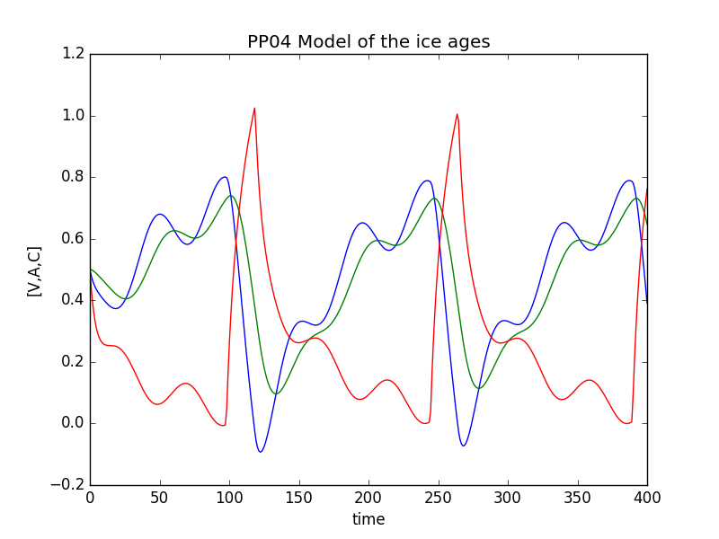

Fun Climate based Activities for National Science Week
What makes our climate change?
Climate change affects all of us and will play a huge role in our lives in the future. Here are some of the many factors that drive our changing climate.
How we predict the changing climate
Using mathematical models we can predict how the climate will change in the future.
These models use mathematical formulae (called partial differential equations) to represent the physics
of the way that the climate changes, including the possible effects of human activity such as the burning of fossil fuels to produce Carbon Dioxide. These formulae are then solve on a super-computer to produce the climate projections that are then used by the IPCC.
Here is a climate projection made by NCAR showing how the climate has changed in the last 100 years, and how it will change in the future given different rates of adding Carbon Dioxide to the atmosphere.
This powerpoint presentation on climate models will take you through the basic ideas behind climate modelling that were used to make the video above (with thanks to Dan Lunt, School of Geographical Sciences, University of Bristol)
This poster An introduction to climate models
tells you how the data is collected to construct a climate model, and the different types of model that are used to predict the climate
Here is a Gresham College Lecture by Chris Budd OBE on
the Mathematics of Climate Change
All in a spin - the Coriolis Force
The Coriolis force arises from to the Earth’s rotation and is one of the most important factors in controlling our climate system. When something is rotating, a ‘sideways’ force is generated which prevents things from moving in a straight line. Common examples include the water leaving a sprinkler or the sparks from a Catherine-wheel firework. The Coriolis force controls the movement of the atmosphere and the oceans on Earth, which together influence weather systems and our overall climate.
It is because of the coriolis force that we have spinning hurricanes, cyclones and typhoons
This Met Office video shows two demonstrations of the Coriolis force in action.
Predicting the changing climate using a home computer
Using the Python Programming Language we can write simple programs to simulate the climate. These are small versions of the very large, and sophisticated, computer models that are used by the Hadley Centre in the UK, and NCAR in the USA, amongst other climate centres, to inform the IPCC about how our climate is changing.
This Python code double pendulum allows you to simulate the chaotic motion of the double pendulum.
This Python code climate models allows you to simulate the climate by using two Energy Balance Models. The first model shows how the temperature of the Earth changes
if we vary the Carbon Dioxide in the atmosphere at a rate comparable to current rate due to the burning of fossil fuels. The second model
includes a simulation of a rapid change in the climate at a tipping point
due to a runaway effect caused by the melting of the Earth's ice cover. Below is an example of two tipping points where the temperature T of the Earth changes suddenly from a Snowball Earth to a Warm Earth
when the Carbon Dioxide levels in the atmosphere increase, changing the emissivity e of the atmosphere
meaning that the Earth heats up. This leads to a melting of the ice caps, which leads to an increase in
the temperature (as the Earth reflects less of the Sun's radiation) leading to further warming.
The reverse situation can occcur when the Carbon Dioxide levels in the atmosphere drop significantly.
To run this code you will also need to down load this picture
changing CO2 levels which shows how the CO2 levels in the atmosphere
have changed over the last 270 years.
This Python code ice age simulator uses a simple climate model
(called the PP04 model) to simulate the ices ages over the last million years.
In the picture below you can see how relative sea and land ice levels (blue and green) and Carbon Dioxide levels (red) change over time (measured in kilo years) through three glacial cycles.

The impact of climate change
Climate change will impact all of our lives in many ways. It will lead to hotter summers and wetter winters. We will see more heat waves and extreme events such as hurricanes and flooding. These will impact on agriculture, health, wildlife, energy, loss of habitat, transport, housing, insurance, and many other area of our life.
Look at the poster to see what you can do to reduce the impact of climate change.
Making a sustainable world
One way to help to reduce the effects of humanity on the environment is to reduce the amount of pollution due to plastic waste. This game will help you to think about how you can do this.